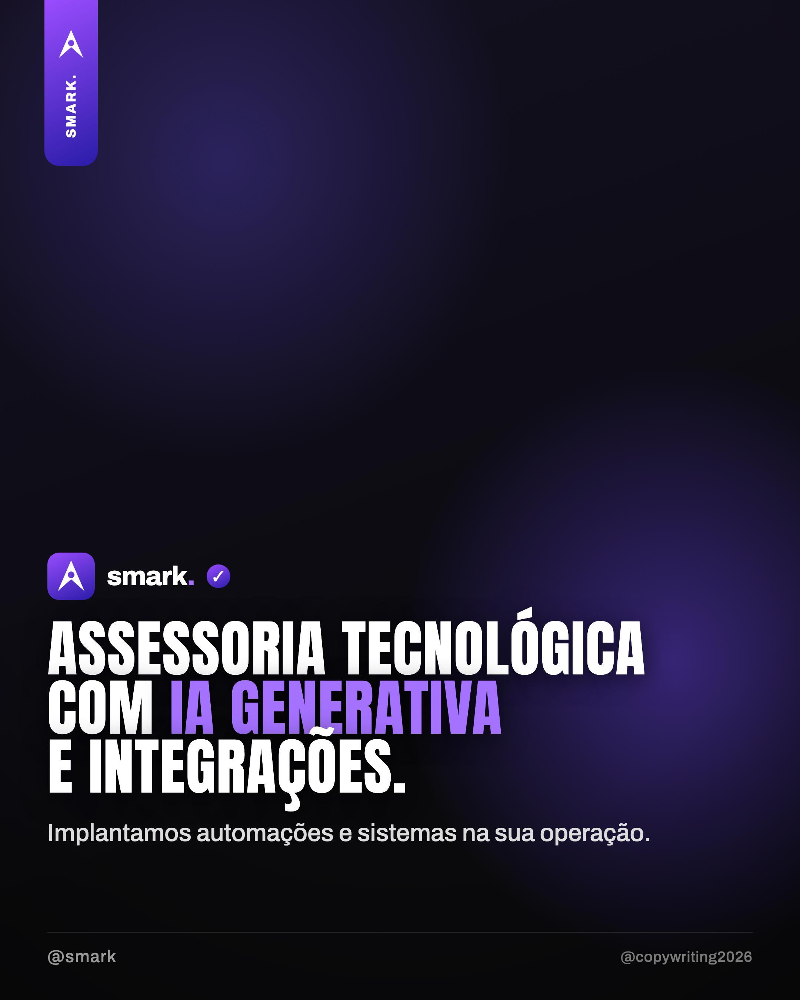
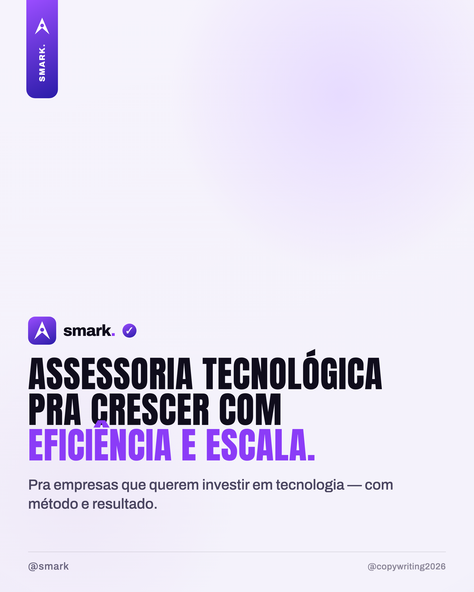
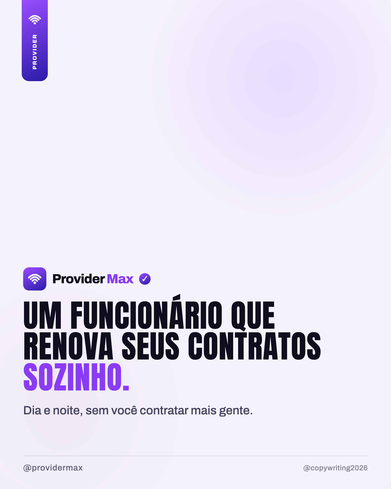
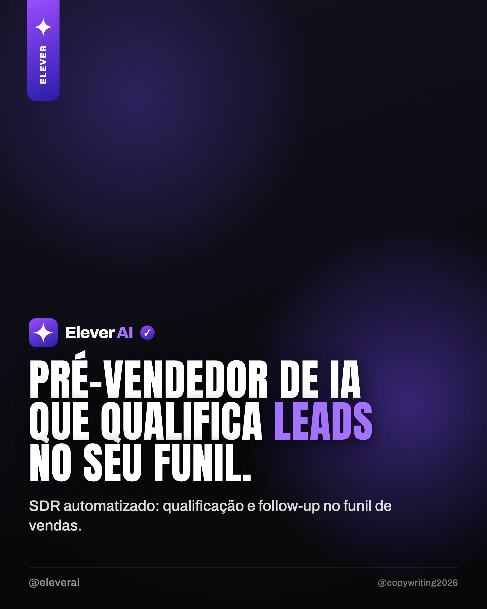
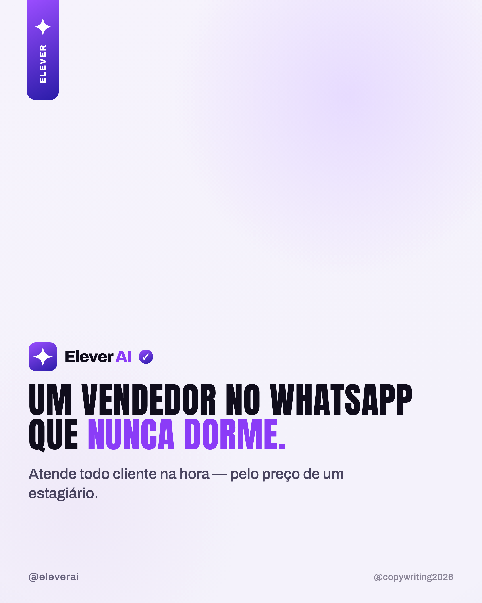

Vitrine de decisão — Antes × Depois
Mesma marca, mesma oferta. À esquerda, a linguagem antiga (técnica, escura). À direita, a nova (função + simples + clara). O teste: qual delas uma pessoa entende em 2 segundos?
prévia local · NÃO enviado ao claude.ai/design
smark · assessoria tecnológica (a mãe)
Antes: "assessoria tecnológica + IA generativa + automações + integrações + treinamento" (multi-oferta, técnico). Depois: sua frase — crescer com eficiência e escala.
ANTES genérico · jargão · escuro

DEPOIS sua frase · claro

Frase-mãe da smark — 5 variações da sua frase
Sua base: "Assessoria tecnológica para empresas que querem investir em tecnologia pensando em eficiência e escala." — vão da mais fiel à mais enxuta. Escolha o ponto.
- 1. Assessoria tecnológica para empresas que querem investir em tecnologia com eficiência e escala. (mais fiel)
- 2. Assessoria tecnológica que põe a tecnologia pra trabalhar — com método, eficiência e escala. (nosso conceito de método)
- 3. Assessoria tecnológica para crescer com eficiência e escala — sem trocar o que já funciona. (★ liga com o fio "pluga no que você já tem")
- 4. Assessoria tecnológica para empresas que querem usar tecnologia pra ganhar eficiência e escalar. (foco em quem decide)
- 5. Assessoria tecnológica para crescer com eficiência e escala. (curta · assinatura)
Provider Max · o funcionário que renova
Antes: "plataforma de IA que reduz churn e faz upgrade · ROI 60-90 dias". Depois: um funcionário que renova contratos sozinho.
ANTES churn · ROI · upgrade
DEPOIS função · custo

Elever AI · o vendedor que não dorme
Antes: "pré-vendedor de IA que qualifica leads no funil". Depois: um vendedor no WhatsApp que nunca dorme.
ANTES SDR · leads · funil

DEPOIS função · 24/7 · custo

As outras artes do feed · já no padrão claro + APEX novo
As 22 capas regeneradas continuam valendo — estas seguem o mesmo tom da coluna "depois".

smark · sistemas agênticos

Provider Max · 6 tarefas

Elever AI · enquanto você come

smark · operação travada

Provider Max · contrato vencido

Elever AI · 6 tarefas